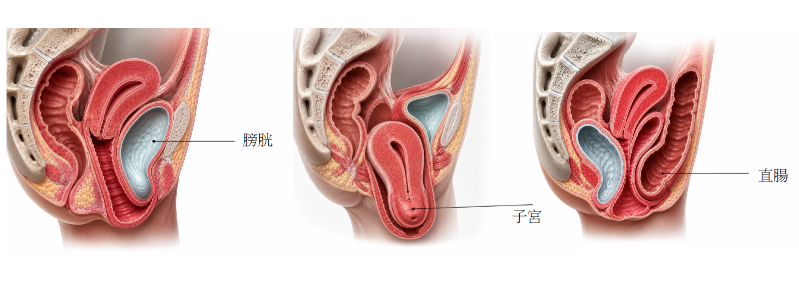
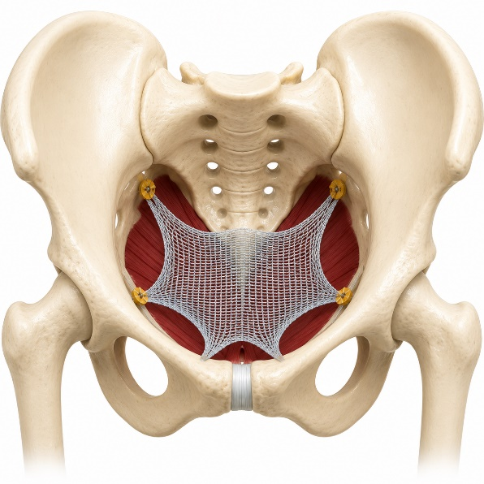
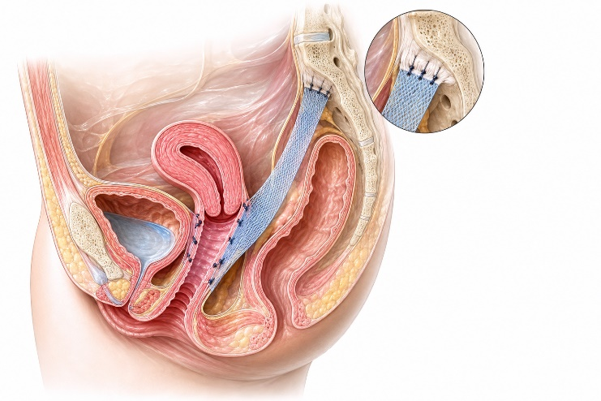

大腿中間夾顆球？
原來可能是骨盆器官脫垂！
子宮、膀胱、直腸脫垂——許多女性有，卻不知道可以治療。
骨盆腔器官脫垂是指骨盆底的支撐結構（肌肉、韌帶、筋膜）因各種原因發生鬆弛或損傷，導致子宮、膀胱或直腸從正常位置向下移位，甚至脫出陰道口外。這是許多女性，尤其是中年以後常見卻常被忽略的婦科問題。

一
為什麼會脫垂？——成因
骨盆底的支撐結構長期承受壓力或受到損傷，是脫垂發生的根本原因：
-
🤱
分娩傷害 陰道生產時骨盆底肌肉、筋膜及神經受到拉扯或撕裂，是最主要的成因。
-
⬇️
長期腹壓增加 慢性咳嗽、長期便秘、重複搬重物，使骨盆底持續承受向下的壓力。
-
🔻
停經後荷爾蒙變化 雌激素下降導致骨盆底組織彈性降低、萎縮，支撐力減弱。
-
⏳
老化 隨年齡增長，結締組織與肌肉自然退化，支撐力逐漸下降。
二
哪些人比較容易發生？——危險因子
-
👶
多次陰道生產，或生產過巨嬰（體重 ≥ 4 公斤）
-
🏥
生產時使用產鉗或真空吸引助產
-
🌸
更年期或停經後女性
-
⚖️
肥胖 體重過重持續加重骨盆底負擔。
-
🚽
長期慢性便秘或慢性咳嗽
-
💪
長期需要搬重物或從事重體力勞動
三
會有哪些感覺？——常見症狀
脫垂症狀因嚴重程度不同而有所差異，早期可能毫無感覺，隨脫垂加重才逐漸出現。
這些症狀通常早上剛睡醒比較輕微，白天越站越久會越來越嚴重！
這些症狀通常早上剛睡醒比較輕微，白天越站越久會越來越嚴重！
🫧 局部感受
- 陰道口有異物感、墜脹感
- 有時可摸到或看到組織突出
- 久站、運動或排便後明顯加重
- 平躺休息後症狀改善
💧 泌尿道症狀（膀胱脫垂）
- 頻尿（出口堵塞，尿不乾淨）
- 解尿困難、尿流細弱
- 甚至需要用手推回脫垂組織才能順利排尿
🚽 腸道症狀（直腸脫垂）
- 排便困難、排便不乾淨
- 需要用手指協助壓迫陰道後壁才能順利排便
💕 性生活影響
- 性行為時疼痛或不適感
- 部分患者因外觀改變而影響性生活意願
四
經陰道骨盆重建手術：人工網膜置放位置示意圖
腹腔鏡薦骨固定術（Sacrocolpopexy）：以網膜將脫垂組織固定於薦骨前方示意圖
怎麼治療？
治療方式依脫垂程度、症狀嚴重度及患者的生育需求、年齡與活動量來選擇，並非每位患者都需要手術。
🌿 保守治療
骨盆底肌肉訓練（凱格爾運動）
透過持續訓練強化骨盆底肌肉，適合輕度脫垂或作為術後輔助復健，建議每日持續練習至少六週以上。
子宮托（Pessary）
將矽膠製的支撐器置入陰道內，物理性撐托脫垂的器官，適合不適合手術或暫不考慮手術的患者，需每天清洗。
荷爾蒙補充
停經後女性可局部使用雌激素陰道乳膏，改善骨盆底組織彈性，常作為手術前後的輔助治療。
🔬 手術治療
症狀明顯影響生活品質、保守治療效果不佳時，可考慮手術。
葉醫師提醒：葉醫師為婦女泌尿專科醫師，提供經陰道或腹腔鏡手術，可依您的個別狀況評估最適合的手術方式。
陰道手術
經陰道骨盆重建，將人工網膜從陰道放到骨盆底，托住子宮與膀胱。若同時有子宮肌瘤、子宮內膜異常、子宮頸病變，可一併處理。適合年紀較大或無性生活需求的患者，優點是手術時間短（約40–50分鐘），且傷口完全藏在陰道內。

腹腔鏡薦骨固定術（Sacrocolpopexy）
將脫垂組織以網膜固定於薦骨前方，以膀胱、子宮脫垂為主，適合較年輕、有性生活需求的患者，術後復發率低、生活品質改善明顯。

提醒
← 回衛教專欄列表
術前術後注意事項
- 手術方式的選擇需依個別狀況評估，建議與醫師充分討論
- 手術後避免持續搬重物，以預防脫垂復發
- 若有計畫再次懷孕，手術時機需特別考量
- 台灣目前網膜的暴露率約 2–3%，遠低於國外的 10% 以上